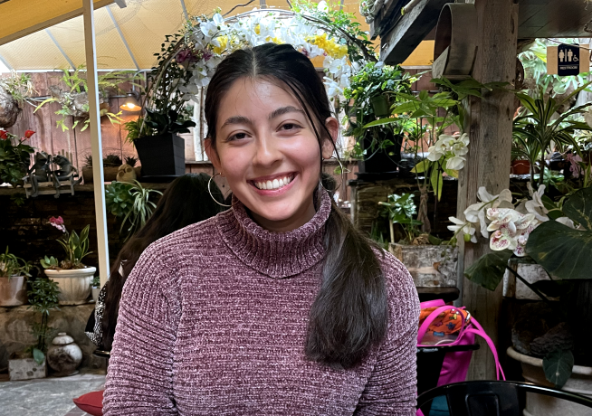

Hi there! I'm Nashelly
Want to know more? Here is my Resume Find me on LinkedIn Let's be in touch! gomeznashelly@gmail.com
I have a Bachelor’s in Health Sciences from University of Minnesota-Rochester. As a new UX/UI deisgner I have had the opportunity to work with a nonprofit organization, Code Savvy, and redesign their navigation as well as other large aspects on thier site. I designed their mobile and tablet formats apart from their desktop format. Being a designer gives me excitement and is rewarding understanding the needs of users and stakeholders to create an enjoyable product. It is fulfilling being able to alleviate user’s pain points while using my skills. I enjoy working in teams and learning from others while helping my teammates. When I’m not designing, I am either painting, going on a hike or spending time with my family.